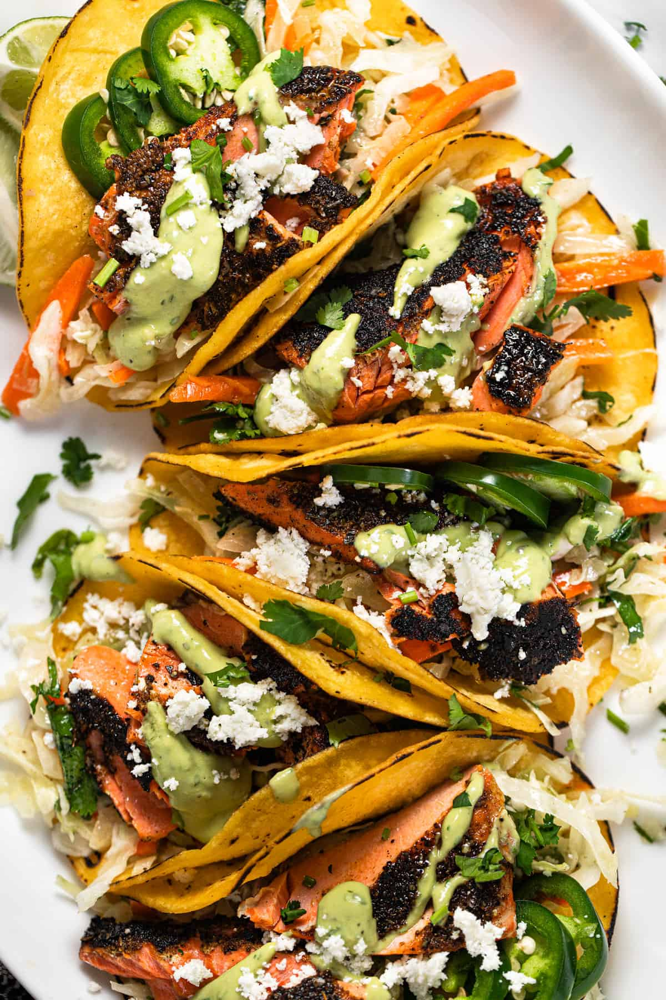

Salmon tacos with mango salsa

Description
Grilled salmon wrapped up in a small tortilla, topped with peach-mango salsa, shredded cabbage, avocado, and a special sauce.
Ingredients
Mango salsa
- 3 mangoes, diced
- 2 peaches, diced
- 3 poblano peppers, seeded and diced
- 1/2 red onion, diced
- 1/2 lime, juiced
- 1 bunch cilantro, chopped, divided
Special Sauce
- 1 container sour cream
- 3 tablespoons mayonnaise
- 1 tablespoon ketchup
- 1/8 teaspoon ground cayenne pepper
- salt and ground black pepper to taste
- 26corn tortillas
- cooking spray
- 2 pounds fresh salmon
- 1 small head cabbage, shredded
- 3 avocados, sliced
- 2 limes, cut into wedges
Steps
- Step 1: Combine mangoes, peaches, poblano peppers, red onion, juice of 1/2 a lime, and 1/2 the cilantro in a large bowl to make mango salsa. Cover with plastic wrap and refrigerate, at least 1 hour, preferably overnight.
- Step 2: Mix sour cream, mayonnaise, ketchup, cayenne pepper, salt, and black pepper in a small bowl to make special sauce.
- Step 3: Preheat oven to 350 degrees F (175 degrees C). Arrange tortillas on a baking sheet.
- Step 4: Preheat a grill pan over medium-high heat; coat with cooking spray. Cook salmon until easily flaked with a fork, about 4 minutes per side. Transfer to a plate and flake into smaller pieces with a fork.
- Step 5: Heat tortillas in the preheated oven until warmed through, about 5 minutes.
- Step 6: Divide salmon among tortillas. Top with mango salsa, special sauce, shredded cabbage, avocados, and remaining cilantro. Wrap up tacos and serve lime wedges alongside.